Fitting allosteric parameters#
%%capture
%run receptor_tools.ipynb
import numpy as np
import random
from matplotlib import pyplot as plt
#G = graphs.HouseGraph()
G = graphs.PathGraph(4)
(G, T, KappaEta, A) = enumerate_allosteric_parameters(G,method='alpha',show=True)
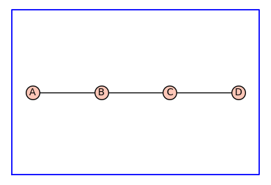
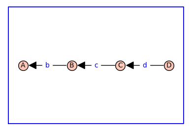
| \(1\) | \(2 \kappa_{\mathit{b}}\) | \(2 \kappa_{\mathit{b}} \kappa_{\mathit{c}}\) | \(2 \kappa_{\mathit{b}} \kappa_{\mathit{c}} \kappa_{\mathit{d}}\) |
| \(0\) | \(\kappa_{\mathit{b}}^{2} \eta_{\mathit{bb}}\) | \(2 \kappa_{\mathit{b}}^{2} \kappa_{\mathit{c}} \eta_{\mathit{bb}} \eta_{\mathit{bc}}\) | \(2 \kappa_{\mathit{b}}^{2} \kappa_{\mathit{c}} \kappa_{\mathit{d}} \eta_{\mathit{bb}} \eta_{\mathit{bc}} \eta_{\mathit{bd}}\) |
| \(0\) | \(0\) | \(\kappa_{\mathit{b}}^{2} \kappa_{\mathit{c}}^{2} \eta_{\mathit{bb}} \eta_{\mathit{bc}}^{2} \eta_{\mathit{cc}}\) | \(2 \kappa_{\mathit{b}}^{2} \kappa_{\mathit{c}}^{2} \kappa_{\mathit{d}} \eta_{\mathit{bb}} \eta_{\mathit{bc}}^{2} \eta_{\mathit{cc}} \eta_{\mathit{bd}} \eta_{\mathit{cd}}\) |
| \(0\) | \(0\) | \(0\) | \(\kappa_{\mathit{b}}^{2} \kappa_{\mathit{c}}^{2} \kappa_{\mathit{d}}^{2} \eta_{\mathit{bb}} \eta_{\mathit{bc}}^{2} \eta_{\mathit{cc}} \eta_{\mathit{bd}}^{2} \eta_{\mathit{cd}}^{2} \eta_{\mathit{dd}}\) |
n_states=G.order()
n_kappa=n_states-1
n_kappa_plus_eta = A.ngens()
n_eta=n_kappa_plus_eta-n_kappa
kappa_list = [A.gen(k) for k in range(n_kappa)]
print(f'kappa_list = {kappa_list}\n')
eta_list = [A.gen(k) for k in range(n_kappa,n_kappa_plus_eta)]
print(f'eta_list = {eta_list}\n')
phi=normalize(random_binary_array(n_states))
#print(f'phi = {phi}\n')
print('phi = [' + ', '.join([f'{x:.2f}' for x in phi]) + ']')
Phi = dimerize(phi)
#print(f'Phi = {Phi}')
print('\nPhi = ')
for P in Phi:
print(' [' + ', '.join([f'{x:.2f}' for x in P]) + ']')
kappa_list = [kappa_b, kappa_c, kappa_d]
eta_list = [eta_bb, eta_bc, eta_cc, eta_bd, eta_cd, eta_dd]
phi = [0.00, 0.50, 0.00, 0.50]
Phi =
[0.00, 0.00, 0.00, 0.00]
[0.00, 0.50, 0.00, 0.25]
[0.00, 0.00, 0.00, 0.00]
[0.00, 0.00, 0.00, 0.50]
# create the symbolic binding curve
FBindingKappaEta=make_symbolic_dimer_binding_curve(Phi,KappaEta)
show(FBindingKappaEta)
print(f'binding = {FBindingKappaEta}\n')
\(\displaystyle \frac{0.5 \kappa_{b}^{2} \kappa_{c}^{2} \kappa_{d}^{2} \eta_{\mathit{bb}} \eta_{\mathit{bc}}^{2} \eta_{\mathit{cc}} \eta_{\mathit{bd}}^{2} \eta_{\mathit{cd}}^{2} \eta_{\mathit{dd}} + 0.5 \kappa_{b}^{2} \kappa_{c} \kappa_{d} \eta_{\mathit{bb}} \eta_{\mathit{bc}} \eta_{\mathit{bd}} + 0.5 \kappa_{b}^{2} \eta_{\mathit{bb}}}{\kappa_{b}^{2} \kappa_{c}^{2} \kappa_{d}^{2} \eta_{\mathit{bb}} \eta_{\mathit{bc}}^{2} \eta_{\mathit{cc}} \eta_{\mathit{bd}}^{2} \eta_{\mathit{cd}}^{2} \eta_{\mathit{dd}} + 2.0 \kappa_{b}^{2} \kappa_{c}^{2} \kappa_{d} \eta_{\mathit{bb}} \eta_{\mathit{bc}}^{2} \eta_{\mathit{cc}} \eta_{\mathit{bd}} \eta_{\mathit{cd}} + \kappa_{b}^{2} \kappa_{c}^{2} \eta_{\mathit{bb}} \eta_{\mathit{bc}}^{2} \eta_{\mathit{cc}} + 2.0 \kappa_{b}^{2} \kappa_{c} \kappa_{d} \eta_{\mathit{bb}} \eta_{\mathit{bc}} \eta_{\mathit{bd}} + 2.0 \kappa_{b}^{2} \kappa_{c} \eta_{\mathit{bb}} \eta_{\mathit{bc}} + 2.0 \kappa_{b} \kappa_{c} \kappa_{d} + \kappa_{b}^{2} \eta_{\mathit{bb}} + 2.0 \kappa_{b} \kappa_{c} + 2.0 \kappa_{b} + 1.0}\)
binding = (0.5*kappa_b^2*kappa_c^2*kappa_d^2*eta_bb*eta_bc^2*eta_cc*eta_bd^2*eta_cd^2*eta_dd + 0.5*kappa_b^2*kappa_c*kappa_d*eta_bb*eta_bc*eta_bd + 0.5*kappa_b^2*eta_bb)/(kappa_b^2*kappa_c^2*kappa_d^2*eta_bb*eta_bc^2*eta_cc*eta_bd^2*eta_cd^2*eta_dd + 2.0*kappa_b^2*kappa_c^2*kappa_d*eta_bb*eta_bc^2*eta_cc*eta_bd*eta_cd + kappa_b^2*kappa_c^2*eta_bb*eta_bc^2*eta_cc + 2.0*kappa_b^2*kappa_c*kappa_d*eta_bb*eta_bc*eta_bd + 2.0*kappa_b^2*kappa_c*eta_bb*eta_bc + 2.0*kappa_b*kappa_c*kappa_d + kappa_b^2*eta_bb + 2.0*kappa_b*kappa_c + 2.0*kappa_b + 1.0)
# add ligand dependencies randomly or manually
manual = False
var('X')
if manual:
d_kappa_X = dict({kappa_b: kappa_b*X, kappa_c: kappa_c*X})
else:
def Round_To_n(x, n):
return round(x, -int(np.floor(np.sign(x) * np.log10(abs(x)))) + n)
d_kappa_X=dict()
num_X = 0
while num_X == 0: # make sure there is at least one ligand binding edge (kappa*X)
for kappa in kappa_list:
k=Round_To_n(np.random.exponential(scale=1.0),2)
ligand_prob = 0.4
if np.random.random() <= ligand_prob:
d_kappa_X[kappa]=k*X
num_X += 1
else:
d_kappa_X[kappa]=k
print(d_kappa_X)
FBindingEtaX=FBindingKappaEta.subs(d_kappa_X)
show(FBindingEtaX)
print(f'binding_x = {FBindingEtaX}\n')
{kappa_b: 0.677, kappa_c: 0.453*X, kappa_d: 2.59*X}
\(\displaystyle \frac{0.315459255404182 \, X^{4} \eta_{\mathit{bb}} \eta_{\mathit{bc}}^{2} \eta_{\mathit{bd}}^{2} \eta_{\mathit{cc}} \eta_{\mathit{cd}}^{2} \eta_{\mathit{dd}} + 0.26887183291500005 \, X^{2} \eta_{\mathit{bb}} \eta_{\mathit{bc}} \eta_{\mathit{bd}} + 0.22916450000000002 \, \eta_{\mathit{bb}}}{0.630918510808364 \, X^{4} \eta_{\mathit{bb}} \eta_{\mathit{bc}}^{2} \eta_{\mathit{bd}}^{2} \eta_{\mathit{cc}} \eta_{\mathit{cd}}^{2} \eta_{\mathit{dd}} + 0.48719576124198 \, X^{3} \eta_{\mathit{bb}} \eta_{\mathit{bc}}^{2} \eta_{\mathit{bd}} \eta_{\mathit{cc}} \eta_{\mathit{cd}} + 0.09405323576100001 \, X^{2} \eta_{\mathit{bb}} \eta_{\mathit{bc}}^{2} \eta_{\mathit{cc}} + 1.0754873316600002 \, X^{2} \eta_{\mathit{bb}} \eta_{\mathit{bc}} \eta_{\mathit{bd}} + 0.4152460740000001 \, X \eta_{\mathit{bb}} \eta_{\mathit{bc}} + 1.5886075800000001 \, X^{2} + 0.6133620000000001 \, X + 0.45832900000000004 \, \eta_{\mathit{bb}} + 2.354}\)
binding_x = (0.315459255404182*X^4*eta_bb*eta_bc^2*eta_bd^2*eta_cc*eta_cd^2*eta_dd + 0.26887183291500005*X^2*eta_bb*eta_bc*eta_bd + 0.22916450000000002*eta_bb)/(0.630918510808364*X^4*eta_bb*eta_bc^2*eta_bd^2*eta_cc*eta_cd^2*eta_dd + 0.48719576124198*X^3*eta_bb*eta_bc^2*eta_bd*eta_cc*eta_cd + 0.09405323576100001*X^2*eta_bb*eta_bc^2*eta_cc + 1.0754873316600002*X^2*eta_bb*eta_bc*eta_bd + 0.4152460740000001*X*eta_bb*eta_bc + 1.5886075800000001*X^2 + 0.6133620000000001*X + 0.45832900000000004*eta_bb + 2.354)
FastCallableFBindingEtaX = fast_callable(FBindingEtaX, vars=['X']+eta_list)
from scipy.optimize import minimize
import random
from matplotlib import pyplot as plt
# construct target function
# xrange and values x for data, x0 for smooth plots
xlogmin=-3
xlogmax=3
x = np.logspace(xlogmin,xlogmax,20)
x0 = np.logspace(xlogmin,xlogmax,1000)
# choose random eta's with 50% chance of being 1 (1 means that this eta is unused)
eta_prob_one = 0.5
eta = np.random.exponential(scale=1.0,size=n_eta)
for i in range(n_eta):
if np.random.random() <= eta_prob_one:
eta[i]=1.0
y = FastCallableFBindingEtaX(x,*eta) + np.random.normal(size=x.size, scale=0.005) # w/ noise
y0 = FastCallableFBindingEtaX(x0,*eta) # y, y0 are large arrays
# create hypercube and flip left/right
Q = graphs.CubeGraph(n_eta, embedding=2)
pos = Q.get_pos()
for v in Q.vertices(sort=False):
xpos,ypos = pos[v] # do not use x,y here! These are needed below
pos[v]=(n_eta-xpos,ypos)
# pos[v]=(ypos,xpos) this didn't look good
Q.show(figsize=6,edge_labels=False,vertex_labels=True, vertex_size=100,edge_thickness=0.5,vertex_colors='white')
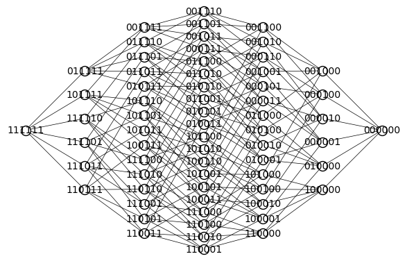
root = "1" * n_eta
d_level = dict()
for level in range(n_eta+1):
for v in Q.vertices(sort=True):
if level == Q.distance(v,root):
d_level[v]=level
print(d_level)
{'111111': 0, '011111': 1, '101111': 1, '110111': 1, '111011': 1, '111101': 1, '111110': 1, '001111': 2, '010111': 2, '011011': 2, '011101': 2, '011110': 2, '100111': 2, '101011': 2, '101101': 2, '101110': 2, '110011': 2, '110101': 2, '110110': 2, '111001': 2, '111010': 2, '111100': 2, '000111': 3, '001011': 3, '001101': 3, '001110': 3, '010011': 3, '010101': 3, '010110': 3, '011001': 3, '011010': 3, '011100': 3, '100011': 3, '100101': 3, '100110': 3, '101001': 3, '101010': 3, '101100': 3, '110001': 3, '110010': 3, '110100': 3, '111000': 3, '000011': 4, '000101': 4, '000110': 4, '001001': 4, '001010': 4, '001100': 4, '010001': 4, '010010': 4, '010100': 4, '011000': 4, '100001': 4, '100010': 4, '100100': 4, '101000': 4, '110000': 4, '000001': 5, '000010': 5, '000100': 5, '001000': 5, '010000': 5, '100000': 5, '000000': 6}
def do_eta_fit(eta_list):
# Define the objective function
def objective_function(params):
eta = params
residuals = y - FastCallableFBindingEtaX(x,*eta)
return np.sum(residuals ** 2)
# Initial guess for parameters
initial_guess = np.ones(n_eta)
# this loop makes elements of the tuple bnds
bnds = ()
k = 0 # nparams
for i in range(n_eta):
if eta_list[i]==1.0:
bnds += ((1, 1),) # eta = 1, not used
else:
bnds += ((0, None),) # eta non-negative
k += 1
# Perform optimization
result = minimize(objective_function, initial_guess, bounds=bnds)
# Extract and print optimized eta's
optimal_eta = result.x
np.set_printoptions(precision=2)
print( optimal_eta )
#print(f'{optimal_eta=}')
# Evaluate result
y0_result = FastCallableFBindingEtaX(x0,*optimal_eta)
res = y - FastCallableFBindingEtaX(x,*optimal_eta)
ssr = np.sum(res ** 2)
n = len(y)
aic = 2*(k+2)+n*np.log(ssr/(n-k))
# Plot result
plot_results = True
if plot_results:
plt.semilogx(x0,y0,linewidth=4,color='yellow',label='exact')
plt.semilogx(x,y,'+',color='black',label='sim data')
plt.semilogx(x0,y0_result,color='red',linestyle='dashed',label='fit')
np.set_printoptions(precision=2)
plt.title(f'aic={aic=},\ntarget eta={eta},\noptimal eta={optimal_eta}')
plt.xlabel('x')
plt.ylabel('phi',rotation = 0)
plt.legend()
plt.grid()
plt.show()
return aic
# make arcs point rightward to "lower" levels only (fewer parameters used, more 1's)
Q_directed = Q.to_directed()
for e in Q_directed.edges(sort=False):
if d_level[e[0]]<d_level[e[1]]:
Q_directed.delete_edge(e)
Q_directed.show(figsize=14,graph_border=True)
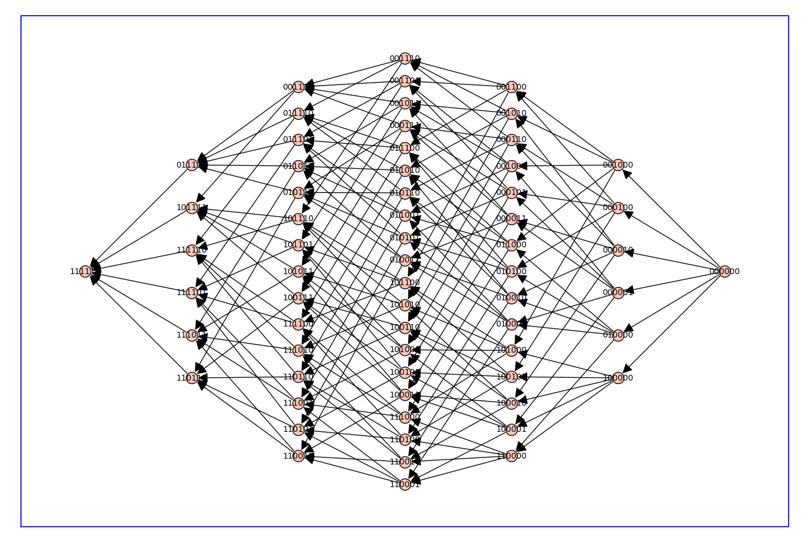
max_depth = 4
d_aic = dict();
Q_aic = copy(Q_directed)
for level in range(max_depth+1,n_eta+1): # delete levels not used
#print(f'{max_depth=} so deleting {level=}')
for vert, lev in d_level.items():
if lev == level:
Q_aic.delete_vertex(vert)
for level in range(0,max_depth+1):
for vert, lev in d_level.items():
if lev == level:
if Q_aic.has_vertex(vert):
#print(type(vert))
aic = do_eta_fit([int(char) for char in vert])
d_aic[vert]=str(f'{aic:.3f}')
Q_aic.set_vertex(vert,aic)
#print(f"level {lev} : eta_mask={vert} {aic=:.2f}")
hang = 0
for nv in Q_aic.neighbors_out(vert):
#print(f'looking at vert {vert} --> {nv}')
if float(d_aic[vert])>=float(d_aic[nv]): # float from str
#print(f'deleted edge {vert=} {d_aic[vert]=} -> {nv=} {d_aic[nv]=}')
Q_aic.delete_edge(vert,nv)
else:
hang+=1
if hang==0 and vert != root:
Q_aic.delete_vertex(vert)
[1. 1. 1. 1. 1. 1.]
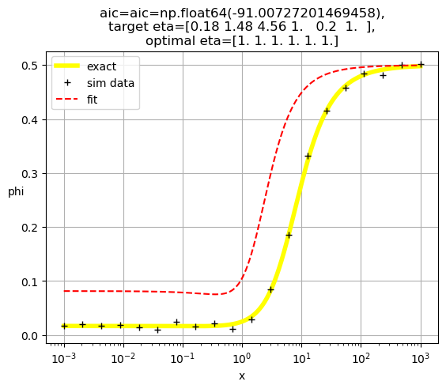
[0.04 1. 1. 1. 1. 1. ]
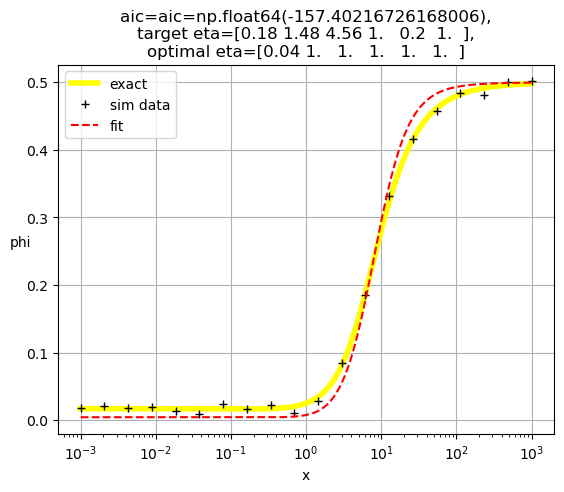
[1. 0.2 1. 1. 1. 1. ]
[1. 1. 0.04 1. 1. 1. ]
[1. 1. 1. 0.25 1. 1. ]
[1. 1. 1. 1. 0.24 1. ]
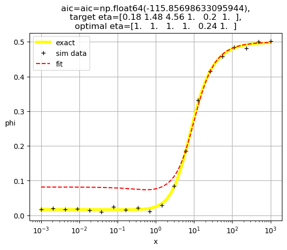
[1. 1. 1. 1. 1. 0.13]
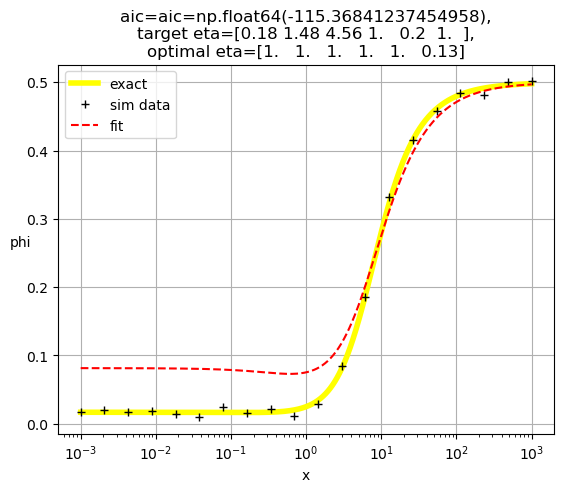
[0.21 0.45 1. 1. 1. 1. ]
[0.21 1. 0.19 1. 1. 1. ]
[0.22 1. 1. 0.46 1. 1. ]
[0.22 1. 1. 1. 0.46 1. ]
[0.21 1. 1. 1. 1. 0.27]
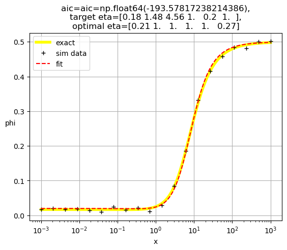
[1. 0.14 2.08 1. 1. 1. ]
[1.00e+00 5.78e+03 1.00e+00 1.12e-01 1.00e+00 1.00e+00]
[1. 0.31 1. 1. 0.65 1. ]
[1. 0.35 1. 1. 1. 0.37]
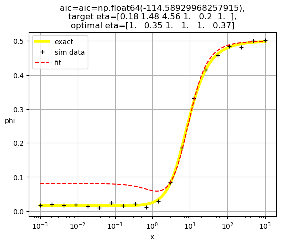
[1.00e+00 1.00e+00 2.23e+07 1.12e-01 1.00e+00 1.00e+00]
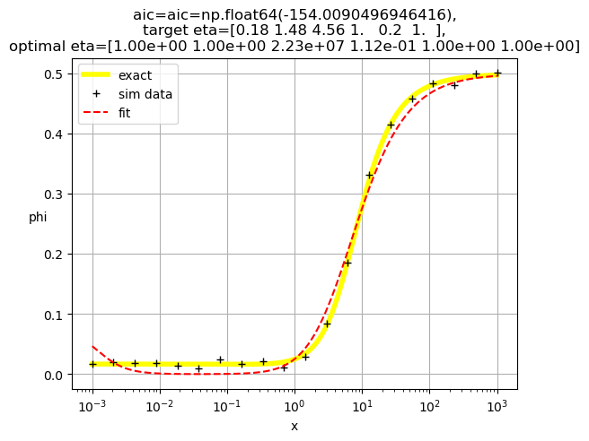
[1.00e+00 1.00e+00 1.28e+07 1.00e+00 1.12e-01 1.00e+00]
[1. 1. 0.23 1. 1. 0.24]
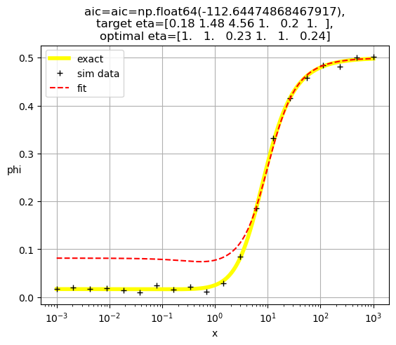
[1.00e+00 1.00e+00 1.00e+00 1.05e-03 2.42e+02 1.00e+00]
[1. 1. 1. 0.21 1. 1.36]
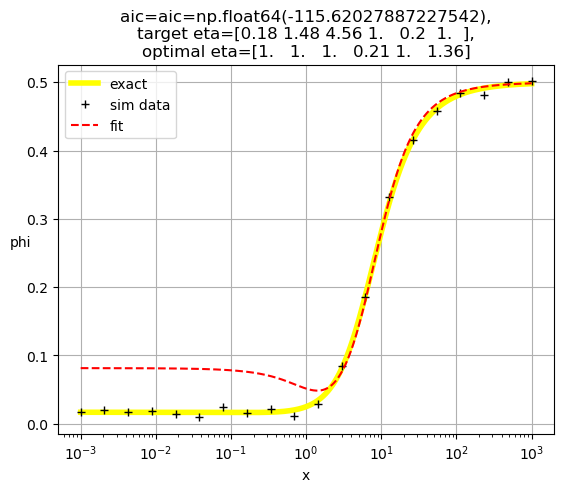
[1. 1. 1. 1. 0.22 1.15]
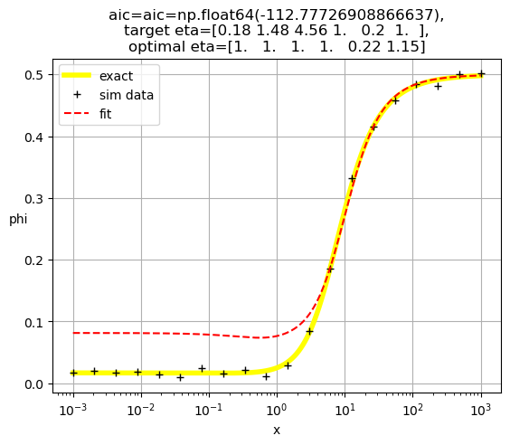
[0.17 2.34 0.04 1. 1. 1. ]
[0.19 3.64 1. 0.19 1. 1. ]
[0.17 2.25 1. 1. 0.26 1. ]
[0.18 1.35 1. 1. 1. 0.21]
[ 0.19 1. 15.23 0.18 1. 1. ]
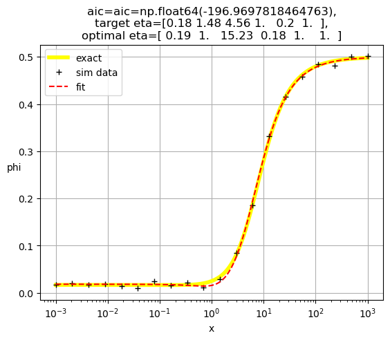
[ 0.18 1. 11.34 1. 0.2 1. ]
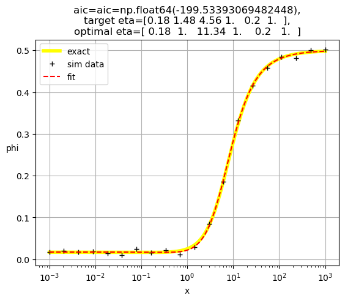
[0.18 1. 2.04 1. 1. 0.2 ]
[0.2 1. 1. 1.72 0.28 1. ]
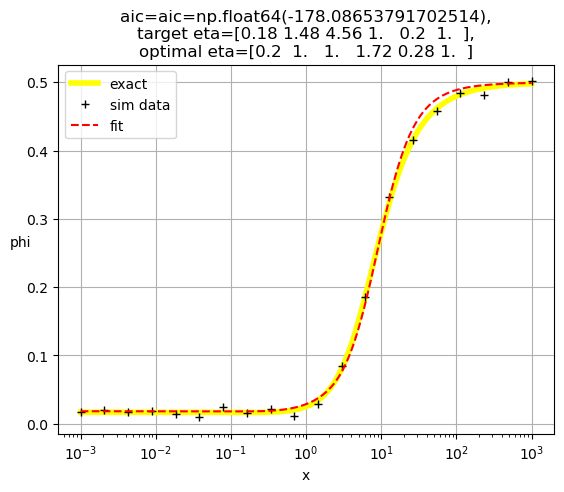
[0.18 1. 1. 1.52 1. 0.15]
[0.18 1. 1. 1. 2.02 0.1 ]
[1.00e+00 4.94e+02 2.65e+02 1.12e-01 1.00e+00 1.00e+00]
[1.00e+00 1.24e-02 2.54e+04 1.00e+00 1.66e-01 1.00e+00]
[1.00e+00 8.35e-03 6.02e+03 1.00e+00 1.00e+00 1.87e-01]
[1.00e+00 3.19e+03 1.00e+00 1.74e-04 6.43e+02 1.00e+00]
[1.00e+00 4.89e+03 1.00e+00 1.06e-03 1.00e+00 1.90e+03]
[1.00e+00 1.98e-02 1.00e+00 1.00e+00 1.00e+03 1.91e-04]
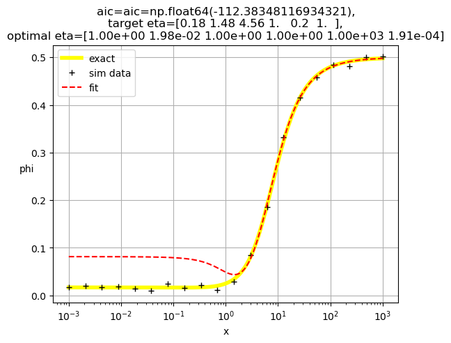
[1.00e+00 1.00e+00 4.34e+00 1.22e-03 1.34e+02 1.00e+00]
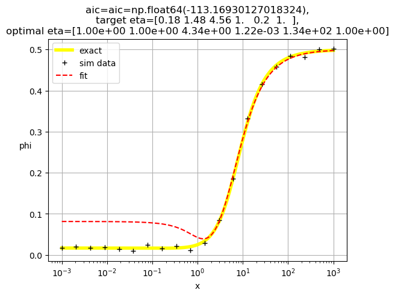
[1.00e+00 1.00e+00 1.12e+04 6.45e-04 1.00e+00 5.06e+03]
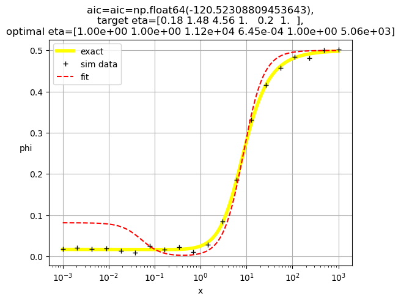
[1.00e+00 1.00e+00 4.88e+03 1.00e+00 5.92e-04 5.99e+03]
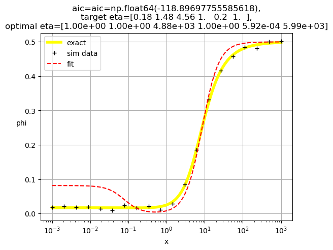
[1.00e+00 1.00e+00 1.00e+00 1.01e-03 4.60e+02 3.97e-01]
[0.19 2.95 1.57 0.19 1. 1. ]
[ 0.19 0.84 16.57 1. 0.19 1. ]
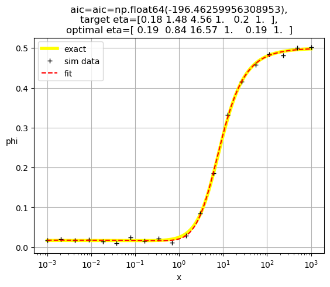
[0.19 0.83 3.04 1. 1. 0.19]
[0.19 3.46 1. 0.27 0.72 1. ]
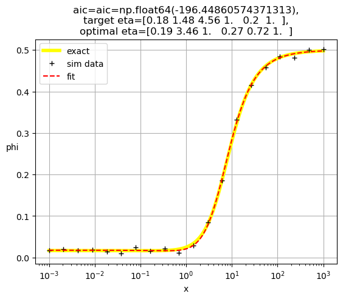
[0.19 2.49 1. 0.35 1. 0.55]
[0.19 0.83 1. 1. 3. 0.06]
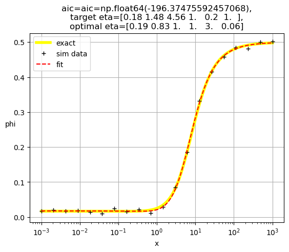
[ 0.19 1. 11.81 0.85 0.23 1. ]
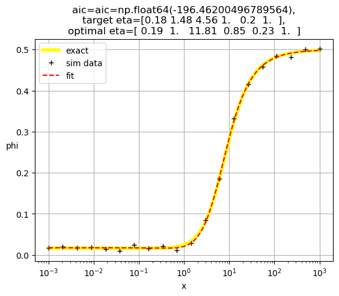
[0.19 1. 2.52 0.83 1. 0.23]
[0.18 1. 1.62 1. 1.25 0.16]
[0.19 1. 1. 0.83 2.49 0.09]
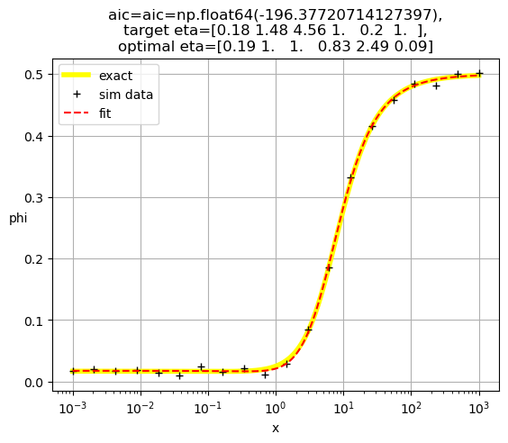
[1.00e+00 3.52e+02 5.28e+02 3.72e-04 3.01e+02 1.00e+00]
[1.00e+00 3.28e+02 4.17e+02 3.88e-03 1.00e+00 1.62e+02]
[1.00e+00 1.49e-03 5.13e+02 1.00e+00 3.55e+02 5.29e-04]
[1.00e+00 4.68e+02 1.00e+00 1.93e-05 4.24e+02 4.31e+01]
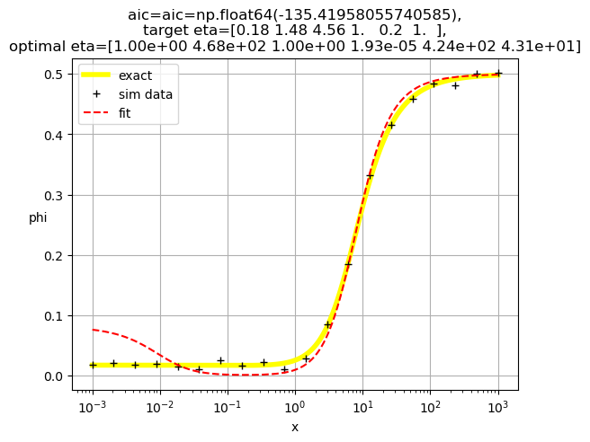
[1.00e+00 1.00e+00 2.91e+02 1.85e-05 2.60e+02 1.15e+02]
print(d_aic)
{'111111': '-91.007', '011111': '-157.402', '101111': '-117.352', '110111': '-115.408', '111011': '-118.669', '111101': '-115.857', '111110': '-115.368', '001111': '-165.446', '010111': '-169.700', '011011': '-174.856', '011101': '-179.349', '011110': '-193.578', '100111': '-114.286', '101011': '-156.260', '101101': '-114.364', '101110': '-114.589', '110011': '-154.009', '110101': '-151.714', '110110': '-112.645', '111001': '-116.019', '111010': '-115.620', '111100': '-112.777', '000111': '-170.008', '001011': '-199.282', '001101': '-189.865', '001110': '-197.968', '010011': '-196.970', '010101': '-199.534', '010110': '-199.420', '011001': '-178.087', '011010': '-195.851', '011100': '-199.407', '100011': '-152.743', '100101': '-112.567', '100110': '-112.427', '101001': '-151.629', '101010': '-149.100', '101100': '-112.383', '110001': '-113.169', '110010': '-120.523', '110100': '-118.897', '111000': '-113.063', '000011': '-195.654', '000101': '-196.463', '000110': '-196.386', '001001': '-196.449', '001010': '-196.413', '001100': '-196.375', '010001': '-196.462', '010010': '-196.390', '010100': '-196.202', '011000': '-196.377', '100001': '-149.523', '100010': '-150.478', '100100': '-109.201', '101000': '-135.420', '110000': '-112.403'}
Q_aic_undirected = Q_aic.to_undirected()
Q_aic_undirected.show(figsize=6,edge_labels=False,vertex_labels=d_aic, vertex_size=0,edge_thickness=0.3,vertex_colors='white',title='AIC pruned')
Q_aic_undirected.show(figsize=6,edge_labels=False, vertex_size=0,edge_thickness=0.3,vertex_colors='white',title='eta\'s not used')
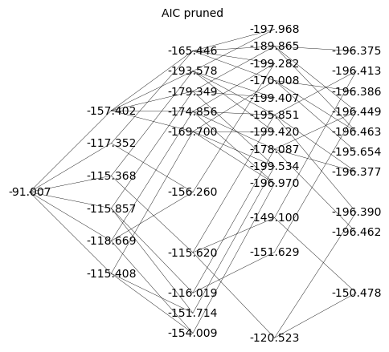
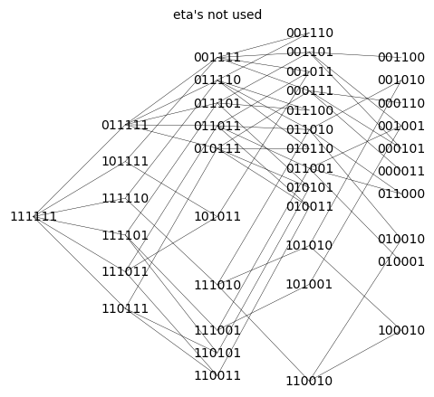